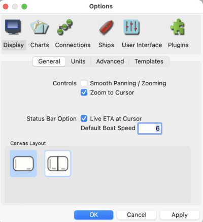
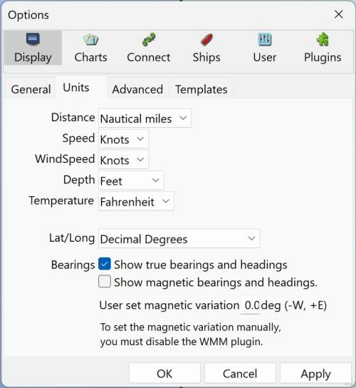
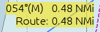
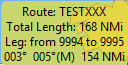
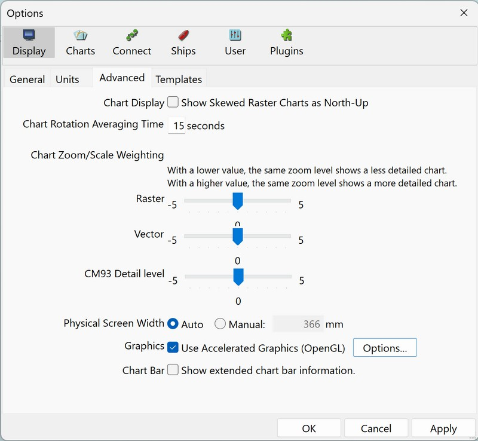
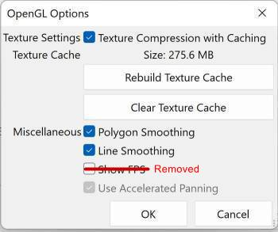

General

Controls
Smooth Panning/Zooming
This works best together with OpenGL. Test to see how it works with your graphic card. If you are using OpenGL, tick this box as well.
Zoom to Cursor
With this box ticked the display is centered at the location of the mouse pointer when you zoom using the mouse wheel. When the box is not ticked the center of the display remains the same when you zoom with the mouse wheel just as it does when you zoom with the + and - keys or the zoom icons on the toolbar. In either case, if you click on the screen the point where you clicked will be moved to the center of the display.
Units

Choose the units that suit your way of navigating. These settings apply to everything in the core program. The exception is Radar rings, where the unit for distance between rings is selected separately.
Plugins have their own settings for units.
Distance
The options are: Nautical miles, Statute miles, Kilometers, and Meters. Short distances are less than 0.1 mile or 0.1 kilometer. If nautical miles or kilometers are selected short distances are shown in meters. If statute miles are selected short distances are shown in feet.
Bearings
-
If "Show True bearings and headings" is ticked OpenCPN will use True courses and bearings.
-
If "Show Magnetic bearings and headings" is ticked OpenCPN will use magnetic courses and bearings.
-
If BOTH "Show magnetic bearings and headings" and "Show true bearings and headings" are ticked you will get both values displayed.
-
User set magnetic variation
OpenCPN knows nothing about deviation!
All Magnetic courses and bearings will have an (M) suffix to show they
are magnetic.


When True and Magnetic are both checked, the following settings will be affected:
-
Bearings and Courses in the Route Properties dialog,
-
route leg rollovers
-
Active Route console will show true and (M).
-
COG displayed on the bottom status line will be true COG and COG(M).
-
AIS target reports will show target true COG and COG(M).
Variation
Variation will be calculated at Own Ship’s position, if possible.
AIS targets will use the targets position for variation, if possible.
Variation is prioritized in the the following order:
-
If a GPS receiver that reports variation as part of HDG sentence is available, and if the HDG message also contains the E/W flags then OpenCPN will use that.
-
If a GPS receiver that reports variation as part of RMC sentence, is available, this value will be used.
-
Otherwise, if the WMM plugin is activated, it will supply the variation, unless the user has selected the variation manually in options.
-
Lacking the above alternatives, the manually entered "Assumed Magnetic variation", will be used for all calculations.
Advanced

Chart Display Show skewed raster charts as North Up
Skewed chart are normally shown as intended by the cartographer, "Chart
up". If this option is selected they are rotated to show North-Up. If
you are looking for speed, don’t tick this box. It slows down the screen
rendering. Skewed charts are a common along the US Inter-coastal
Waterway.
More here:
AutoFollow and
Chart
Display Orientation
Chart Rotation averaging time
Controls how often the entire displayed chart is updated when Look Ahead and/or Course-Up mode are activated. The Own Ship and AIS icons are still updated every second. The default value is 15 seconds. A "zero" value is allowed! The default mode is North-up. It’s easy to switch between the two modes through the right-click menu or Display Orientation Icon next to the GPS Status Icon located upper right corner.
Chart Zoom/Scale Weighting
-
With a lower value the same Zoom level shows a less detailed chart.
-
With a higher value the same Zoom level shows a more detailed chart.
-
Raster: Adjust from -5 to + 5
-
Vector: Adjust from -5 to + 5
-
CM93 Detail Level: Adjust from -5 to + 5
The slider applies to zoom operation dynamics, not to static chart selection. This option is asking this question: "On zooming in, when do we switch to a smaller scale chart if available?" Your answer may depend on your screen resolution and other preferences. The slider affects zoom-in operations most directly.
-
Setting the slider to -5 delays switching to smaller scale to improve performance and visibility.
-
Setting the slider to 0 restores the default behavior.
-
Setting the slider to +5 switches sooner to a smaller scale chart to show more detail.
-
It is not intended that a user exercise this control very often.
-
Experiment, set it to your liking for average charts in your area, and leave it set.
Physical Screen Width
Automatic sensing or Manual setting to override.
If set to “Automatic”, the default setting, OpenCPN will use the size
that the operating system reports. Sometimes Automatic is not correct,
leading to an incorrect scale on screen for the charts. The OpenCPN log
will state what your operating system thinks about your screen size.
19:03:44 CET: Detected display size: 338 mm
Manually enter the width of your screen by selecting “Manual” and entering the width in millimeters. The value shown is from a sample 17“ screen.
Use Accelerated Graphics
Use Accelerated Graphics (OpenGL) checkbox
The net effect of full OpenGL optimization on raster charts with compatible hardware is nothing short of amazing, especially with low-spec, low-power systems.
If you have started OpenCPN without OpenGL support, this option will be greyed out. Confirm that your graphics board supports OpenGL and also make sure to install updated OpenGL drivers for your graphics adapter, see opengl \\. Unfortunately OpenGL support on earlier Windows is sometimes problematic. Intel’s early Windows OpenGL graphics drivers were very buggy.
OpenGL Options
Read more on the opengl page!
For more OpenGL Graphics settings use "OpenGL Options".

An expert version is available by adding a line to the opencpn.ini (opencpn.conf) file.
[Settings]
OpenGLExpert=1
To turn the expert version off, change the value from “1” to “0”, or delete the line. The expert OpenGL Graphics options screen: image:/opencpn/manual_basic/set_options/tb-opt-disp-adv-option-expert.jpg[tb-opt-disp-adv-option-expert.jpg,width=360] === Texture Compression Greatly improves the speed of raster chart display. It works by treating raster charts as compressed textures instead of bitmaps, and these textures are loaded and displayed much more efficiently by the graphics hardware. They also consume much less GPU memory space. === Texture Compression with Caching A further improvement to raster chart display loading and panning. This option uses the system hard drive to store pre-calculated raster chart compressed images in a way that is optimized for direct loading into the graphics card. When enabled, the texture cache is created dynamically, as charts are visited in normal navigation. Depending on the OpenGL hardware capabilities, there may be some slight, but noticeable, delay as a chart is accessed the very first time while the textures are created, compressed, and written to disk. Once a particular chart section has been cached, subsequent accesses are very fast. If the OpenGL hardware texture buffer is capable, then rendering on-screen is virtually instantaneous. * The cache understands color scheme changes. Cache entries are automatically created for each of the 4 possible BSB color schemes, as they are encountered in normal operation. BSB Color Schemes are the four colour schemes (Default, Day, Dusk & Night) defined in the IHO Document S-52, Specifications for Chart Content and Display Aspects of ECDIS. * The cache understands chart Edition Dates. So, if one manually updates a chart (thus changing the chart's Edition Date), the old cache contents will be discarded, and a new cache will be built automatically as the new chart(s) are visited. * Using compressed texture caching retains all the benefits described earlier. It is very much faster on low spec hardware, at the expense of more disk space usage. * There is a command line option which will build/update your compressed texture cache. You may execute opencpn like this: opencpn /rebuild_gl_raster_cache (-rebuild_gl_raster_cache on linux) * "Texture Compression" and "Texture compression caching" may actually slow down some machines, depending on the capabilities of the video system. * If you are using OpenGL on a low-spec machine, you will have better performance if you
-
disable texture caching, or
-
Pre-build the texture cache in a region of interest. That is, move the boat to say Dover. Then do Options→openGLOptions→Build Texture Cache. You do not need to wait the entire time, which may be hours for a large chart set. "Skip" out when the distance reported is 100 miles or so. Eventually, after steady use, your texture cache will be filled automatically in the background, and performance will increase steadily.
=== Texture Memory Size (MB) * Texture Memory Size (MB) is set to 128 and just below that is a confirmatory "Texture Cache 275.6 MB". === Clear Cache button. === Rebuild Cache button. === Polygon Smoothing * Smooths polygons. === Line Smoothing * Smooths lines. === Use Accelerated Panning * Works if your graphics card supports Frame Buffer Objects. == Template You can save and name display templates that use different settings, such as for coastal versus offshore navigation. image:/opencpn/manual_basic/set_options/tb-opt-disp-temp.jpg[/opencpn/manual_basic/set_options/tb-opt-disp-temp,width=500] === Creating a new Template to save settings image:/opencpn/manual_basic/set_options/tp-opt-disp-temp-2.jpg[/opencpn/manual_basic/set_options/tp-opt-disp-temp-2,width=500]